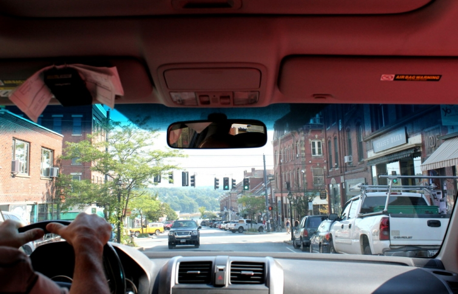
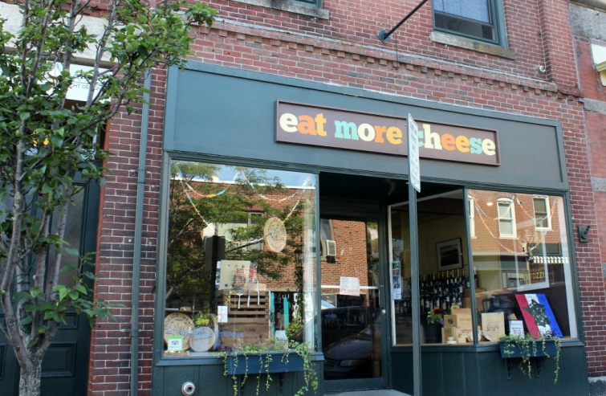
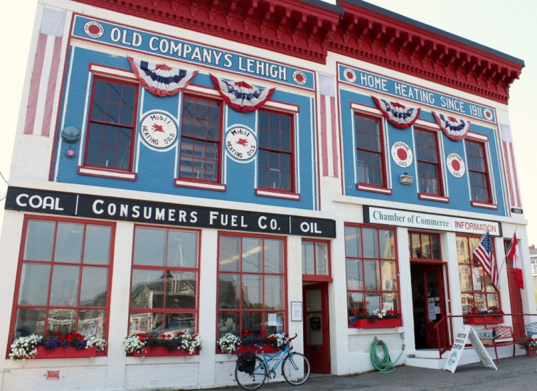

.png)
.PNG)
.PNG)
.PNG)
.PNG)
.PNG)
.JPG)
.JPG)
.PNG)
.PNG)


A road trip involves a lot of miles, and this one was no exception. After our first night at Whitehall, we were off to spend the day driving through some northern Maine coastal areas. Along the way we were passing cute shops….
some charming old buildings…
a number of picturesque harbors…
 and then this display went by my car window…
and then this display went by my car window…
and I yelled, “Stop! Stop! We have to go in there!”
If it was that big, and a store for cooks, I knew it had to be good! So my husband turned the car around, parked, and we trekked inside. It was Rooster Brother…an amazing place where I could have spent a small fortune (or a large one!) There was a floor of cookware and everything cooking related, a floor of coffee, wine, and cheese with a coffee shop, and another floor that was their outlet with marked down kitchen items. I was in heaven! 🙂
They had cookware, dishes, cookbooks, kitchen tools, picnic ware, placemats and napkins, paper goods…you name it. They had it. I had much restraint and only bought one item – something for our son’s kitchen that I will show you in a week.
After a cup of coffee from Rooster’s cafe, we were on the road again.
Next stop… Bar Harbor, Maine.
We had never been to Bar Harbor before, so I really did not know what to expect. It was busy… very busy. And parking?? Oh. my. goodness. Let me just say, finding a place to park in Bar Harbor in August was worse than finding a parking spot in Highlands, North Carolina on a peak leaf October weekend. Not easy at all. But after a half hour of looking (and tailing people to their car…not really 🙂 ) my husband managed to parallel park in a super small space. We went for lunch (nothing to write home about) and then decided to walk around the town for a bit.
By the harbor we discovered Agamont Park, a gorgeous spot in Bar Harbor.
This is the view as you approach the harbor in the park.
It was a gorgeous day to be relaxing there.
There was even a view of the pretty Bar Harbor Inn from that grassy knoll.Here is a closer look at the main inn in the complex.
And here is a view to the other side from the park.
Along the harbor you will find numerous shops…
with wonderful landscaping!
If you are in the area, I have heard that Paddy’s Irish Pub is a really good place for lunch. (Unfortunately, we did not eat there.)
After seeing all that we wanted to in Bar Harbor, we climbed back in the car and drove on to a totally different place…
Acadia National Park.
No crowds there, but plenty of gorgeous sights like this one…
and this one..
and this one.
We made our way around the loop that circles the park and then drove over to see Bass Harbor Head Lighthouse.
Sailboats were out in the water by the lighthouse making for a postcard perfect photo.
We made the drive back to Whitehall in Camden after seeing the lighthouse. That night we dined at Waterfront Restaurant there on the harbor.
The food was good there, but the service was slooooow, and I don’t think it was our server’s fault. She was moving as fast as she could every time I saw her. There are just sooo many tourists in Maine in August. They need a bigger staff at night.
The previous night we had dinner at Shepherd’s Pie in nearby Rockport. We had a view of the kitchen like this, and I could watch them prepare everything from where I was seated.
Shepherd’s Pie was highly rated a few years ago, but recently it seems to get mixed reviews. The menu has quite a few unusual offerings, and our son really liked it. I put together a meal of side dishes for me due to limited offerings with a shellfish allergy. The buttermilk potatoes were excellent, and my husband enjoyed his dish as well. But service there was not good at all. If you are in no hurry, I guess you wouldn’t mind, but I value our time – even if we are on vacation.
Okay, now for the last of our Maine tour…Camden. 🙂
We spent our last day in Maine sightseeing in the downtown area – a short drive from our inn. Camden is a very charming little town with many many shops.
There are a number of antique and gift shops.Lots of interesting shop windows!
One of my favorite places was Stonewall Kitchen. 🙂
More dishes and food!
(Have you noticed that I love kitchen stores? I bet you do too. 🙂 )
I wanted to buy one of each of their sauces and jellies! (We did buy our parents some to bring home to them. 🙂 )
But my favorite shop was Jo Ellen Designs. I did not get enough photographs of this beautiful place, so I am sharing a few extras that I have found online.
I circled this table about 5 times before deciding on buying our daughter a few pieces of that robin’s egg blue enamelware. I also purchased a book and a “decorative accessory” for our son’s apartment. (He did “approve” the purchase. 😉 )
The owner, Jo Ellen Stamen, is an artist, a children’s book illustrator, and a collector of all the beautiful things in her shop…from bedding to rugs to accessories, and even pajamas. 🙂 Don’t miss her shop if you are in this area of Maine. It is a treasure!
Besides great shops, you will also find churches in charming Camden…
and the super busy harbor.
There are a number of bed and breakfast inns. This is the Hawthorne Inn.
And this one is Abigail’s Inn.
The town is also filled with beautiful old homes…
many of which were painted white.
Whew! And that was our few days in Maine. Thank you for once again traveling along with us. Our road trip takes us next to Vermont – the favorite of both me and my husband.
This is what our room looked like in our Vermont inn.
(See why we liked it?)
It was a beauty, and I can’t wait for you to see the rest of it!
Until next time…


.PNG)
I have always wanted to go to Maine and Vermont. I am so excited by all of your posts. They have really brightened my spirits. You take such wonderful pictures and you make everything look so cozy. I feel so lucky to have found your blog:)
——————————————————————–
You should make a trip to New England. Maine and Vermont are both just beautiful. I want us to make another trip there one fall to see all the leaves. Thank you for all your sweet comments AND for reading the posts. 🙂
Kelly
Love road trips! Isn’t it fun just to get out and about. And you have had some rather spectacular ones this summer. Bar Harbor looks delightful. Maine is on our bucket list along with Vermont for the fall. Those homes and churches are just New England charming. But my favorite was the Coal Oil Company with the Mobil flying red horse. Awesome! And kitchen stores, I am a little envious there. I enjoyed the trip!
———————————————————————-
You are right; we definitely had a spectacular one this summer. That one won’t be matched for quite a while….probably not until we make our next one to the west coast. And even then, I don’t believe we will find another kitchen store as large as the one we saw in Maine. It was beautiful!
Kelly
This makes me want to hop in the car and go somewhere….like Maine! I want to shop in Starbirds and Jo Ellen’s and see all of the quaint homes. Have you been to Dutchman in Highlands? It seems similar to Jo Ellen’s. (Maybe I will just go there for now.) Guess what I finally found last night at Lowes….the BH&G Christmas Ideas magazine!!! I bought it and saved it until this morning… to have something to look forward to, with coffee in bed. I tried really hard to read it cover to cover but had to skip over to your section. OMGoodness! How wonderful! Everything looks perfect! You and Haley look beautiful and your husband, so sophisticated …like “Please, go fetch my slippers and pipe!” I am ready to skip fall and go right into decorating for Christmas. (And, I thought of a million questions for you.)
——————————————————————-
Jo Ellen’s was absolutely lovely. You should see all the rugs she had hanging on the walls! Yes, I have been to wonderful Dutchman’s. Love shopping in Highlands, and I have really been craving a trip there lately. Thank you for all your compliments on the BHG feature. The “slippers and pipe” made me laugh out loud! Now you need to go find a copy of Southern Cottage – the winter issue that just came out. You might enjoy it as well. 🙂
I am not ready for Christmas thinking yet…have barely wrapped my head around the fact that October is here next week! Where in the world did September go?????
Kelly
Oh, my goodness. I could do damage in some of those shops. AND the beautiful homes and Inns. Would love a peek inside!!! Thank you for allowing us to go on vacation with you! Love the pictures.
——————————————————————–
It is a good thing that I knew I had to restrain myself or I would have spent a bunch myself. (Every time I turned around there was something new I wanted to get for our son’s apartment. He kept putting the brakes on that. 🙁 )
Thank you for reading the travel posts. I am happy you have enjoyed them so far!
Kelly
Can’t for the next leg of the trip. Love the Robins egg blue enamel ware…hope you bought me something pretty…ha ha. I think from seeing all of your pictures I could spend a small fortune. You and I would be a danger together in a kitchen store…just say’n.
——————————————————————–
Oh I bought you an entire set of the robin’s egg blue pieces! LOL I too think we could be pretty dangerous in a kitchen store…so many wonderful things to buy!! My mother and I were at an estate sale today. Guess which room had the best things in the house…the kitchen of course!
I came away with red ribbon for outside Christmas bows. 🙂
Kelly
Kelly,
I did like the Maine you’ve shared, maybe I’ll plan my visit in November when the crowds have thinned a bit. I love kitchen stores and great hardware stores. That view. If you and your hubby loved Vermont, I bet I will too.
😀❤️
Karen
————————————————————————
If I had to choose between Vermont and Maine, I think I would choose Vermont – especially Vermont in early October. I think November in Maine would be very cold…perhaps late September would be better.
That kitchen store was like no other one I had ever been in…it beat Sur la Table and Williams Sonoma put together!
Off to read your post on autumn decorating. 🙂
Kelly
I am loving my virtual vacation. I picked up a copy of Southern Cottages. I knew about the BH&G magazine article, but I was pleasantly surprised to see your home in the Southern Cottage magazine as well. It is quite lovely.
———————————————————————
I’m happy you are enjoying the trip, Sandy! I did not know Southern Cottages was featuring our house as well. It is owned by Cottages and Bungalows so it must be a reprint of the article they ran 4 years ago before I was even blogging. The house looks a little different now – especially our daughter’s bedroom. Thank you for letting us know!
Kelly
Whew! I know what you mean about the parking situation in downtown Bar Harbor in August. We were there around that time, too. Cadillac Mountain is such a jewel of a place to miss. My family has visited that exact red & white-colored Visitor & Tourism center in Camden… or was it Belfast, I thought. Those floral window boxes struck my memory when I glanced at your picture on top. Thanks so much for sharing!
————————————————————————
If you were there in August, yes you do know the parking fun of Bar Harbor! I think that visitor center was Belfast. We saw it after we left Camden and headed north. There are so many charming towns in Maine!
Kelly
I feel like I have visited Maine. You have certainly whet my appetite for taking a road trip to such beautiful and picturesque places! I know I’ll make it someday so I’ll keep in mind all your posts!! :)The buildings, inns and homes are so beautiful and I would have been in heaven in the kitchen store! I can’t pass one up. 😉 But those views! That is what I would enjoy seeing the most! I can’t believe the park wasn’t crowded. Can’t wait to visit Vermont. 😉 🙂
———————————————————————-
You need to plan a trip there Gina…Go after Labor Day. I understand the crowds are MUCH less then, and you will enjoy it more. That kitchen store was just amazing. Can you imagine being newly married and starting out with all the things from there???
Vermont is coming in next 2 posts. 🙂
Kelly
Loved this! Stop by NC and pick me up the next time you go to New England, please😁! I love all the things you do! Kitchen Shops..almost heaven. What pretty shop Jo Ellen Designs is. Robin’s Egg blue enamelware..sweet gift. Lovely old homes. What a treat you gave us, Kelly. Thank you. Can’t wait for our Vermont tour. My favorite too!
Until then,
Sherry
———————————————————————-
Will do! Jo Ellen Designs has to be the prettiest shop I have been in in a very long time. I wish I could have purchased all of the enamelware for my daughter. That is her favorite color. Vermont is coming, and it is just gorgeous there!
Kelly
Kelly,
What another delightful trip. That shop with robins egg blue enamel ware looks lovely and I would have had to buy some sauces at the other store as well. I enjoy appetizers so much that some times that is all I order when we go out to eat. Your room at the Inn is so cozy looking. I would love to have one of those cute green blankets! Thanks for sharing. Take care.
———————————————————————-
From the shopping to the appetizer ordering, we must be sisters Dawn! I need to take you along with us. LOL And yes, you need those wonderful green blankets!
Kelly
Bar Harbor is one of my all time favorite places! We also drove up the coast one September and visited all of these wonderful spots. Maine is my second favorite state … just behind North Carolina!
xo, lissy
———————————————————————-
Then you also went to some lovely places Lissy! (And I am right there with you on the North Carolina love. 🙂 )
Kelly